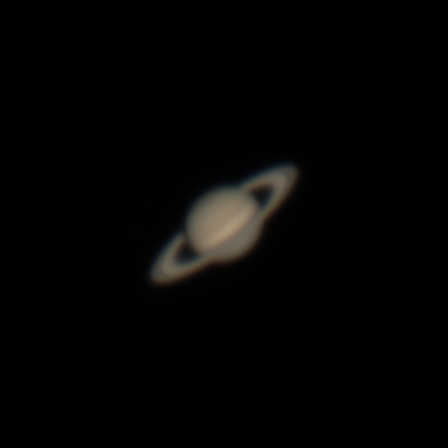
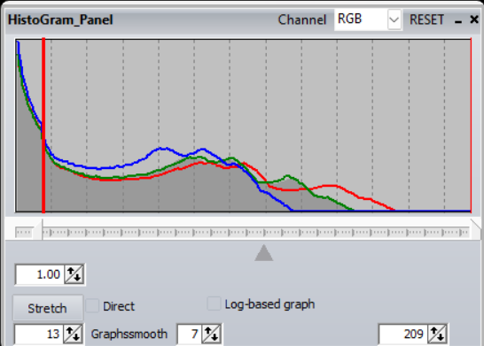

February 25, 2023.
Have you ever hoped to capture the fascinating rings of Saturn? The first thing I want to say, is that it is possible! You will need a telescope, but if you have the patience, you won't need any super expensive mount or anything like that.
Note: These procedures are similar for photographing
planets such as Mars and Jupiter
This tutorial is going to be showing what I did to create this photo of Saturn with the equipment listed below.
Planetary photography involves finding the planet you're going to capture. Then taking a video/several videos. Using a proccess called stacking you take the best frames from the video and combine them to reduce noise --- making the image better. And finally, editing the photo to bring out the details.
This photo has been compressed
8" skwatcher dobsonian - any dobsonian similar to this will work
ASI462MC planetary camera - other planatery cameras will work as well, even a dslr - though it might not work quite as well
A laptop computer is also required to save the data onto
A 2x barlow lens
Note: I will be assuming you already know how to use a telescope for visual astronomy
The first thing I would recommend doing is getting a general idea of where Saturn is in the sky at the time you are planning on heading outside. Or at least have a way to figure that out when you are outside.
My favorite website/program for that is called Stellarium. Simply search in the search bar for Saturn, and it will show you where it is in the sky. Look for other bright stars around the Planet as well, as a way to find it when you're actually outside (Saturn will have a bit of a yellow tint to it, which should distinguish it from other stars).
There's also a moble app for Stellarium, which can make this a bit easier, since the app allows you to point your phone in the sky, and it will show you what is what.
Next, you should make sure that you have enough storage on your laptop, as you will be saving the data you capture onto it. Taking raw vidoes uses a lot more storage than you might expect, I would recommed having at least 50 gigabytes of storage.
You should also make sure that you have all the neccesary programs and drivers installed on your laptop. The program I used for actually capturing the data was Sharpcap. I recommend testing your camera before heading outside to photograph for the first time.
Note: Planetary photography is also possible on a dslr
and adapter, similar methods would be used,
_ however the results may not be quite as good_
The first thing to do is of course to set up your telescope. Then bring out your computer, eyepieces and barlow lens, and camera.
Something to keep in mind is that your telescope might need some time to acclimate to the tempenture outside, especially if you have an even larger telescope. I haven't ever really had a problem with this, maybe because it takes me some time to find Saturn, and actaully start capturing.
Next, you should open Sharpcap on your computer, and connect your camera to it. You can do this by plugging it into your computer using the cable provided with the camera. Also, screw on the uv/ir filter onto your camera (you need this if your camera lets through ultraviolet, or infrared light.). Then click on the "Cameras" button in the top-left of Sharpcap, and choose your camera.
Also, make sure your exposure is not super low, and set your iso/gain fairly high to make sure Saturn will show up (don't put your exposure so high that the framerate of your camera gets too low)
Note: if you are using a dslr, then
you won't need to bring a computer outside
After all that is done, you should find Saturn in the sky, without your telescope first. You can use the app mentioned above.
The next thing to do, is actually get Saturn in the telescope, with your camera ready to take pictures!
There are a few different approaches to finding Saturn and focusing, here are two methods
Method 1: Insert an eyepiece into your telescope, then find the planet. After you find it, switch to using your 2x barlow lens and make sure it's in either in the center, or if you can see which direction it's moving, you can put Saturn to the opposite side so it stays in view for longer. Now quickly switch the eyepiece out for your camera, and get a rough focus, and make sure it's visible on your computer screen.
That method might be a little tricky and complicated, especially because Saturn is going to move quickly at that high of magnification, and keeping it visible on your computer can be challenging.
So, since you will probably have to find Saturn multiple times, I'd recommend using the method below unless you are having a hard time finding it, or if you need to get focus if the moon is not out.
Method 2: First, insert your 2x barlow lens into your telescope, then your camera. Next use the finderscope on your telescope to find the moon (if it is out). Then focus on the moon. Next head over to Saturn, by only using the finderscope attached to your telescope.
I use the second method, especially if the moon is out, however if it isn't, then you might want to use the first method first, then the second.
All of that might seem like a lot, however, they are just tips and recommendations. Do whatever works for you.
Finally! you are almost ready to start capturing Saturn and it's rings!
First, get the best focus possible by turning the focus knob on your telescope. Spend a little time here and try a few times to make sure you have the best focus posssible.
Next, in Sharpcap you should set the settings on your camera. Put the exposure low, then turn it up until you start loosing fps. Now change your iso/gain until Saturn is not too bright and not too dark. Be careful to not blow out any parts of the planet.
The settings I used are below
Iso/gain: 354
Exposure: 16.69ms
Now click the "Start Capture" button in the top left corner of Sharpcap, this should bring up a window before actually starting the video. Move this window off to the side and then place your mouse cursor over the start button, but don't click it.
Figure out which direction Saturn is moving on your computer screen, and position the planet on the opposite side/corner, so that it will stay in frame for the longest amount of time. Now click start!
Wait until Saturn is almost out of view, then click the "Stop capture" button.
Now, take a few more videos, using the same proccedures. This way, you will be able to either choose the best video, or combine them get the best final image.
The rest of the proccess will be done inside and on a computer.
First, either go through your videos and choose the best one. Or combine all the videos. When looking for the best video, look for planet stability - a not shaky planet, and a longer video would be better than a shorter one.
I combined all the videos for my image, however that proccess can be kinda complicated, so I'm not going to go over how to do that in this tutorial.
Two free programs will be needed for the pre proccessing, they are:
PIPP is used for debayering videos, and making the planet not move in the video, so that it is ready for stacking.
Here is a short explanation of what debayering is: Sometimes videos are stored in a black and white video with a debayer pattern, in order to save space on your computer. debayering simply uses that pattern to turn them into a color video.
After opening PIPP, the first thing you should do is click on the planetary checkbox near the bottem left of the window.
Next load your videos into the program. You can do this by either dragging them into the window, or pressing the file button, (top left corner) then clicking "add source files" and finding them in the window that shows up.
A window might pop up asking you if you would like to debayer the videos. If your videos look black and white, and your camera is a color camera, click yes. If you need to debayer your images and the window didn't pop up, then go to the "input options" tab. Under "colour debayer" (bottom right) click "Debayer Monochrome Frames". Next, under "Colour Debayer Options" you will see four capital letters, choose whichever debayer pattern you need to use for your camera. For the camera I used (ASI462MC) the pattern needs to be set to "RGGB", though you will need to figure out what pattern to use for your camera.
That should be all the settings you need to set for this program, so click the "Do Proccessing" tab, then press "Start Proccessing". After the program finishes, you should have a folder which starts with "pipp", in it should be the output from the program. The video should be color, and the planet should not move much anymore.
Autostakkert is used for stacking the best frames in your video to create a much cleaner image than if you just took one single frame out of your video.
If you take a look around Autostakkert, you might notice three buttons labled 1, 2, and 3. As you might expect, you will be using those buttons in that order. You might also notice that there are two windows, you will need to use both of them.
First you should click on the button "1) Open" then find the video that PIPP created in the pop up window, and open it. Next click "2) Analyse".
After it's done Analysing your video, you will notice that there is a graph in the middle of the window you are currently using. This graph basically shows you what percentage of your frames are good quality, and where the quality drops. You will need to decide how many frames to use depending on how your graph looks, 20%, 30%, 50%, 70% etc. You can click around on the graph, to see what your frames look like at a specific percentage (it will show you on the other window). After you have what percentage you would like to stack, under "Frame percentage to stack" (near the top-right) fill in one of the four boxes with the percentage. You might need to do a little bit of experimenting with how many frames to stack, so you can fill in as many of the boxes you desire, and the Autostakkert will stack your video in all the different ways you filled out.
Now, on the other window, you should see a picture of Saturn. Start off by clicking the "Place AP grid" button (bottem-left of the second window). You should see some boxes appear, if not you will have to adjust the settings I'm about to discuss.Basically what you will be trying to do on this window, is getting the boxes to cover all of Saturn, but not too much.
Above the button you just pressed, you should see a minimum brightness adjuster. Adjusting this should change how the boxes are placed, after you click the "Place AP grid" button again.
Another thing you can adjust is the AP size. You can do this above the brightness adjuster. Every time you change something, to see it you will need to press the "Place AP grid" button. Make sure all of Saturns rings get covered, but try to use the least amount of boxes as possible.
Finally click the "3) stack" button. Autostakkert will go through the stacking proccess, and produce one, or up to four different images (depending on if you chose more than one percentage of frames to stack).
Don't worry if your images look a bit blurry at this point, that's normal. Choose the best image the program created, and move on to the post proccessing to sharpen up your image!

This photo is compressed, however
It is much more blurry than the fully
proccessed image
One free program will be used for the post proccessing: Registax.
First open up Registax, and you can drag the stacked image from Autostakkert into the Registax window. Or if you prefer press the "select" button in the top left corner, and find your image from there.
A few windows may pop up: if it says "Stretch intesity-levels" I have always clicked "No". After that if it asks if you want to proccess in color, click yes (as long as you have a color image).
Registax should immediately skip to the "Wavelet" tab (top left) because you have already aligned and stacked the video. On the right you should see a "Functions" group. These buttons allow you to do different important proccesses. Under "Functions" you can open up the zoomed view, in order to see details better.
Now to actually begin proccesing. Press the "Histogram" button under "Functions" to open up the histogram (I would recommend keeping this open the entire time, to make sure nothing passes the right side of it, and nothing goes crazy). Using the histogram, you are going to have to stretch and cut the image.
To stretch it, pull the arrow on the bottem right of the histogram somewhat into the empty space. How much you pull it in will depend on how much empty space you have, I would do more or less around half of the empty space. This way you will have space to go further in the rest of the proccess.
Next, cut some of the data off of the left side of the histogram in order to cut out some of the blurry edges of Saturn. To do this, drag the arrow on the bottem left of the histogram into the spike of data on the left of the histogram. Don't go too far, but A lot of the spike (if the spike is more spread out, then don't cut the entire thing off). To actually cut it off, click the stretch button again.

Saturn should now look a bit less blurry. But you may notice some chromatic aberration (color fringing) around the edges of the planet, especially with the rings, to fix this, click "RGB Align" under "Functions" and drag the green box, that should have appeared on the image of Saturn, to cover just all of the planet. On the new window, which showed up, click "Estimate" this should have, for the most part fixed this issue. You can now close the "RGB Align" window.
You might also notice that the colors (red green and blue) lines on the histogram don't line up. To fix this, click "RGB Balance" under "Functions". On the pop up window, press "Auto balance". Most of the time this will work, and the lines will be mostly lined up, and Saturn will look a more natural color.
Auto balance can, however fail. If it does, then use the settings on the window - drag the red, green, and blue sliders, and use the colourweights to manually get the rgb lines to line up on the histogram. Also make sure Saturn look natural on the preview. The "RGB balance" window can be closed now.
Your image is almost done! But there still is one major proccess to do, and that is the wavelets. These are the bars on the left side of registax. There is a total of six of them. Normally I only really use the first three, though I would definitely suggest playing around with the other three.
There is no one way to do these, I just reccommend going through them top to bottom, and playing around with them until you get the best results. I will, however give a few suggestions with what I might start with.
First, drag the top wavelet to around maybe 50, or 70. The wavelets produce a bit of noise, so click the denoise (the first number with arrows that you can click) a few times (2-5). Then press sharpen (to the right of denoise) once or twice. Next, move the second wavelet to around 20-30, and press denoise a few times, then sharpen maybe 2-3 times. Watch out for any remaining chromatic aberration, as sharpening will make it more noticeable. Lastly, bring the third slider to maybe 40-50, denoise a few times, finally sharpen 1-2 times.
And you are done!
Now click the "Save image" button near the top left of the window, and choose a name. Then click "Save".
You could bring the photo into photoshop or gimp, however I haven't found that neccessary.
Never be afraid to experiment, edit your photo as many times as you wish!